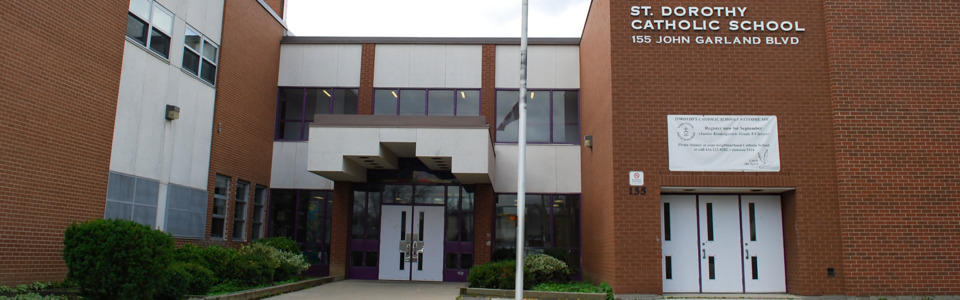
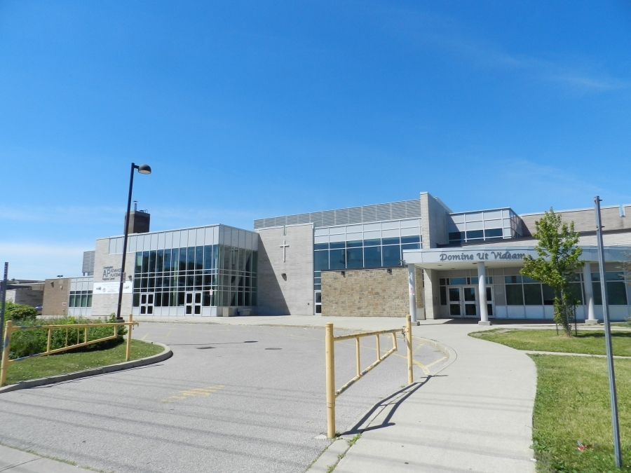

My Name is Divine Mensah. My background is from Ghana but I was born and raised in
Canada.
As I grew up, my family taught me how to treat others with respect and show kindness. Throughout
my
life I continue to learn new things and the people I have encountered such as teachers and
friends
who have taught me things that made me view my life to have a successful career.
Education
St.Dorothy
I started my school career at St. Dorothy Catholic School. This was my big first step into
starting
my school career. I made many friends and learned lots of life lessons from my teachers that I continue
to carry on till this day. I enjoyed being at this school and made lots of memories. After graduating at
St. Dorothy, I went to Father Henry Carry for Highschool.

Father Henry Carr
Highschool was my next step during my school career. Although my first year was during covid, I was
still
able to have an enjoyable year. Over the next 3 year was when covid restrictions were lifted, it made my
Highschool
experience even better and I began to learn more and meet new teachers and friends during my Highschool
years. Father Henry Carr is a school I will also never forget, it was a wonderful experience.

My Goals
My goal is to find something I enjoy doing as a job within the technical field.
I mostly use only the computer during my freetime. Since I was little, I always
enjoyed using the computer. I liked how the software functioned as it was being
ran by code in the background. Everything about the software in the computer is
fascinating. As I grew, I decided that I may want have a career in Computer Programming
or CyberSecurity.
Short Video
This short video I choose is a motivational video that I keep for myself. It reminds
me to never give up and to always keep pushing forward even if things may not go my
way. This is someone who I also admire as he is the one who keeps my hopes and dreams
to building a successful career.